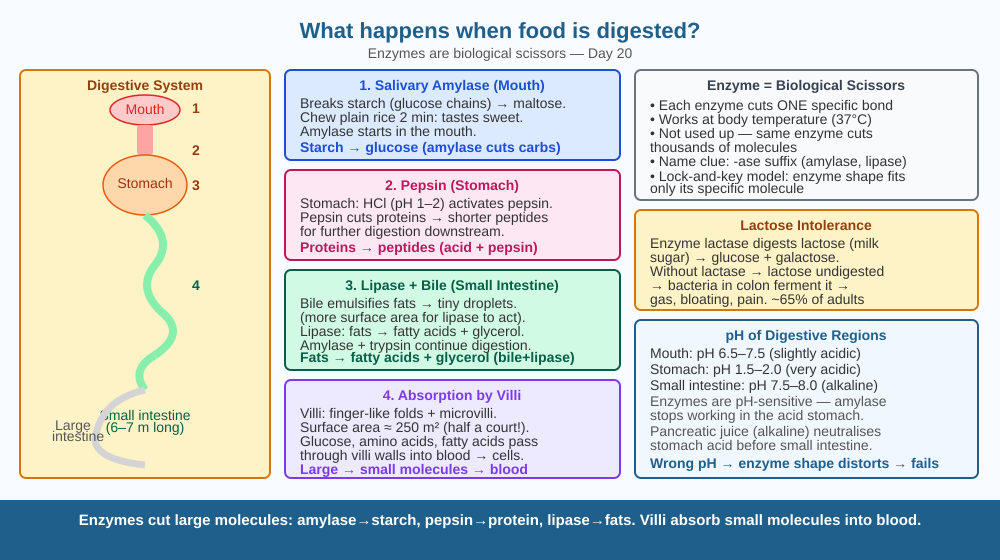

Follow a bite of roti from your mouth to your blood — and meet the biological scissors that cut molecules into pieces small enough to pass into your body.
You eat a handful of rice. The rice disappears. Hours later, your muscles use that energy to run. But the rice molecules are far too large to enter your blood directly. Something must cut them down to size. Who does the cutting, and how?
Digestion is the process of breaking large, complex food molecules into small, simple ones that can cross the gut wall into the bloodstream. The main tools are enzymes — biological scissors that cut specific molecular bonds — and acid in the stomach.
Mouth: Chewing crushes food physically. Saliva adds the enzyme amylase, which starts cutting starch (long chains of glucose) into shorter sugars called maltose. You can taste this if you chew a plain cracker for 30 seconds — it starts to taste sweet.
Stomach: Muscular walls churn food into a paste called chyme. Stomach cells secrete hydrochloric acid (HCl, pH 1–2) that denatures proteins (unfolds their shapes), making them easier to cut. The enzyme pepsin then clips proteins into shorter chains (peptides).
Small intestine (main digestion zone): The pancreas sends: - Amylase — finishes cutting starch → glucose - Proteases (trypsin, chymotrypsin) — cut peptides → amino acids - Lipase — cuts fat into fatty acids + glycerol The liver releases bile into the small intestine — bile breaks fat droplets into tiny micelles (emulsification), giving lipase more surface area to work on.
Absorption: The wall of the small intestine is lined with thousands of finger-shaped villi, each covered in even tinier microvilli (called the brush border). This creates an enormous surface area — about the size of a tennis court — for nutrients to cross into the blood.
Large intestine: Absorbs water and minerals. Bacteria here ferment undigested fibre, producing vitamins (B12, K) and gases.
Think of your food as a long chain of paper clips (like a necklace of glucose units). Your body can only post single paper clips through a very small slot (the gut wall into the blood). Enzymes are the scissors that clip the chain apart, one link at a time, until you have individual clips small enough to post through. Acids soften the chain so the scissors can grip it more easily.

The diagram shows the digestive tract as a vertical tube. Each section is labelled with the organ, the key enzyme or chemical, and the nutrient it processes. Zoom-in insets show: (1) a villus cross-section with a capillary inside absorbing glucose and amino acids; (2) a fat droplet surrounded by bile micelles, then broken by lipase into fatty acids.
Put a piece of white bread in your mouth and chew without swallowing for 60 seconds. Notice the change in taste — it becomes noticeably sweeter. This is amylase in your saliva breaking starch into sugars. Your mouth is doing digestion right now. Compare with a piece of cooked potato (similar starch but different structure) — does it change taste at the same speed?
The stomach produces acid strong enough to dissolve a nail, yet never digests itself. The stomach lining secretes a thick layer of bicarbonate-rich mucus that neutralises acid right at the cell surface. Three layers of protection (mucus, bicarbonate, rapid cell renewal every 3–5 days) keep the stomach intact. What do you think would happen if one of these three protection layers failed — and why might stress or certain painkillers damage this layer?
What is the main process that happens when food is digested in the body?
Why is understanding the enzyme-driven mechanism of digestion more useful than knowing food gets broken down?
If a person's body could not produce the enzyme amylase, what would you predict about their digestion of starch?
A cow eats grass that is almost entirely cellulose — a carbohydrate humans cannot digest. Yet cows thrive on this diet. Cows have a four-chambered stomach and billions of cellulase-producing bacteria in their gut that break down cellulose. Humans lack these bacteria and the enzyme cellulase entirely. Design an experiment to test whether a specific bacterium (X) can help a mouse digest cellulose: what would your control group be, what would you measure, and how long would you run it?
The small intestine's surface area, when all villi and microvilli are unfolded and laid flat, equals about 250 m² — roughly a tennis court. Yet it all fits inside your abdomen because it is folded into intricate layers. This packing trick — enormous surface area in a tiny space — appears throughout biology: your lungs (300 million alveoli, 70 m² surface), your kidneys (filtering tubules), and the brain's heavily folded cortex all use the same principle of surface area maximisation.
Enzymes are biological scissors that cut large food molecules into small ones. Amylase (starch → glucose), pepsin (protein), lipase (fat). Villi absorb nutrients into the blood. No enzyme → no digestion of that food.